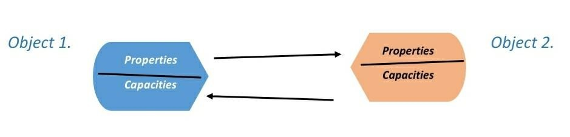
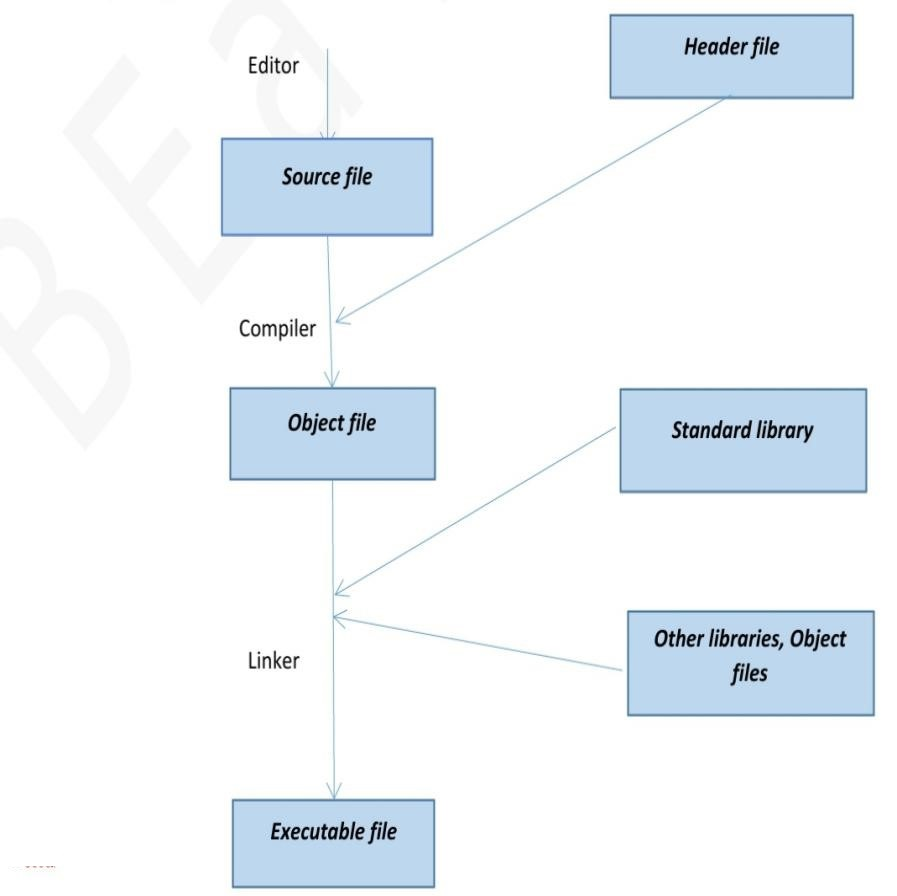

OBJECT-ORIENTED CONCEPT

Advantages of OOPs
It offers several major advantages to software development:
I. Reduced susceptibility to errors
II. Easy re-use
III. Low maintenance requirement
TRANSLATING A C++ PROGRAM
The following three steps are required to create and translate a C++ program:
1. First, a text editor is used to save the C++ program in a text file. In other words,the source code is saved to a source file. In larger projects the programmer will normally use modular programming. This means that the source code will be stored in several source files that are edited and translated separately.
2. The source file is put through a compiler for translation. If everything works as planned, an object file made up of machine code is created. The object file is also referred to as a module.

It is very essential to use the correct extension for the source file’s name. And it is only depends on which compiler you use. Some of the common file extension we use are “.cpp and .cc”.Before compiling the header files(it also called as ‘include files’), which is copied to the source file. Header files are text files which contains the specific information for the various source file. For an example we can take type definition (declarations of variables and functions), then header files can have extension file ”.h” , it may doesn’t have.
C++ standard library contains predefined and standard library that are available for any compiler. Modern compilers normally offer an integrated software development environment, which combines the steps mentioned previously into a single task. A graphical user interface is available for editing, compiling, linking, and running the application. Moreover, additional tools, such as a debugger, can be launched. In addition to that it shows error message that is compiler will issue an error warnings.
If the source file contains just one syntax error, the compiler will report an error. Additional error messages may be shown if the compiler attempts to continue despite having found an error. So when you are troubleshooting a program, be sure to start with the first error shown.